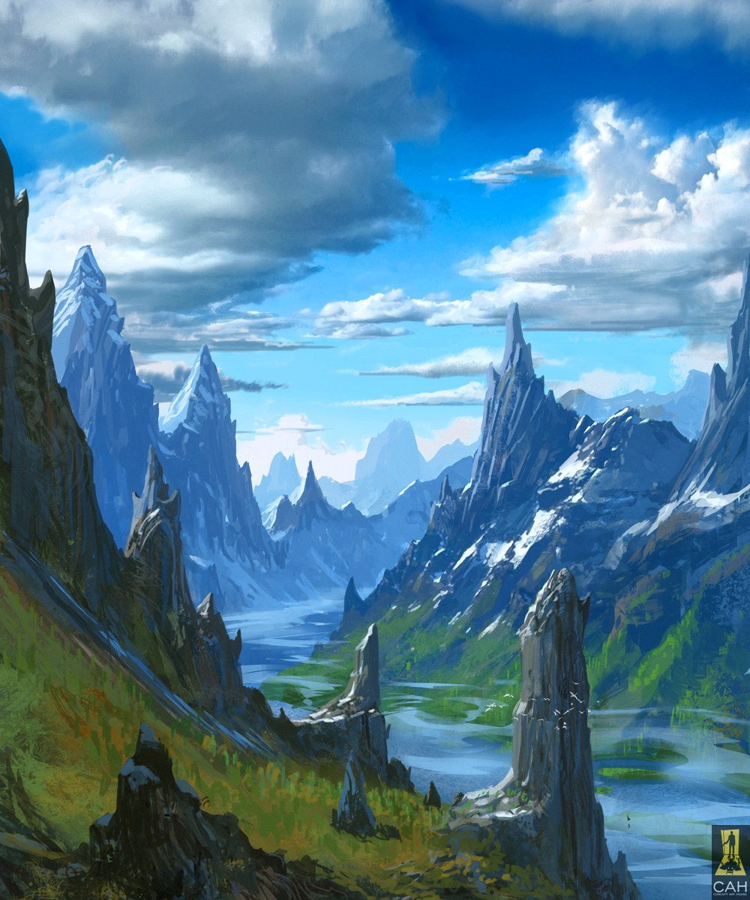
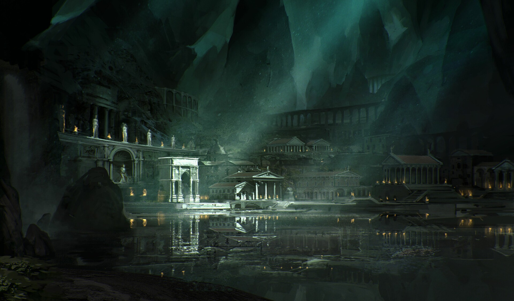
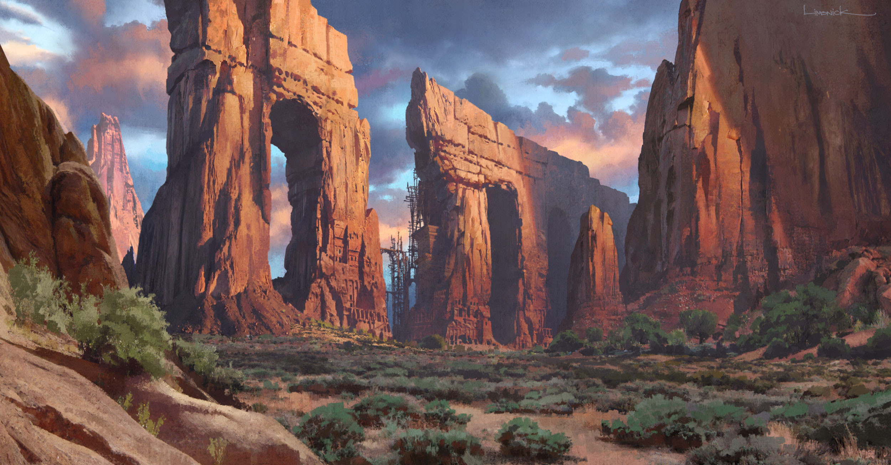

Raças de Ashalara
Bem-vindo a Ashalara, onde as raças se entrelaçam em uma teia de destinos entrelaçados, e a magia e o perigo se encontram em cada esquina. Seja parte dessa jornada e descubra o verdadeiro significado de ser um herói em um mundo de fantasia e aventura.
Em Ashalara, rivalidades e alianças se formam, e cada raça busca seu lugar em meio aos desafios do reino. A sobrevivência, o poder e a busca por equilíbrio definem a jornada de cada um, moldando o destino de Ashalara. Prepare-se para embarcar em uma aventura épica, onde suas escolhas moldarão a história deste mundo fantástico. Descubra o verdadeiro significado de ser um herói em Ashalara, onde magia e perigo aguardam em cada esquina
As raças de Ashalara desempenham um papel fundamental neste vasto mundo. Ao adentrar o jogo, você terá a oportunidade de escolher uma entre as oito raças disponíveis:
Aetheris,
Darum,
Daruk,
Haldur,
Mechanaris
Nyssaris,
Shadar e
Xel'tanis.
Cada raça possui habilidades e características únicas que, embora tenham um impacto sutil nas mecânicas do jogo, desempenham um papel significativo em suas jornadas.
Aetheris
Aetheris é uma raça que tem o costume de viver em ambientes altos e topos de montanhas. Sua resiliência em situações de ar rarefeito, atraiu muitos olhares quando chegaram a Ashalara, sendo uma das primeiras raças a explorar o novo território. Os Aetheris, prevendo a grande praga que assolou sua terra natal, buscaram refúgio em Ashalara.

Essa raça tem uma forte conexão com o ar, mas diferentemente do que se acreditava, não possuem asas. No entanto, sua intimidade com os ventos e correntes de ar lhes confere uma habilidade única de se moverem com agilidade nas regiões mais altas. Os Aetheris são conhecidos por serem reclusos e eremitas, optando por viver em isolamento e se tornando habilidosos andarilhos.
Os Aetheris trazem consigo uma devoção profunda à natureza e aos elementos do ar. Eles acreditam que são filhos de um antigo Deus que dominava o ar e, como resultado, possuem uma afinidade especial com a atmosfera ao seu redor. Muitos Aetheris praticam uma forma de espiritualidade ligada aos elementos e buscam equilibrar sua existência em harmonia com o ambiente.
Os Aetheris, com sua conexão com o ar e sua busca por equilíbrio, trazem uma perspectiva única para o mundo de Ashalara, influenciando a atmosfera cultural e a interação com outras raças.
Darum
Os Darum são uma raça bastante antiga, mas relativamente nova em Ashalara. Eles são conhecidos por sua robustez e preferência por viver no sopé de montanhas e até mesmo em seu interior. Apesar de não terem uma mentalidade expansionista, os Darum foram envolvidos em várias guerras e batalhas, com destaque para a guerra contra os Shadar pela disputa do subterrâneo

Os Darum foram forçados a deixar as profundezas do subterrâneo devido a um grande cataclismo que ocorreu em sua terra natal. Assim como outras raças, eles migraram para Ashalara em busca de um novo lar. Embora soubessem da existência de Ashalara, não havia necessidade de se estabelecerem lá anteriormente
Os Darum possuem uma cultura rica em relação aos seus deuses. Eles cultuam várias divindades e levam essas crenças muito a sério. A conexão com seus deuses é uma parte integral de suas vidas e molda suas tradições e rituais.
Apesar de serem fragmentados em vários clãs, os Darum mantêm um senso de unidade como raça. Eles compartilham uma herança comum e valorizam a força e a resistência. Mesmo em Ashalara, os Darum permanecem fiéis às suas tradições e estão dispostos a defender suas terras e interesses com vigor.
Daruk
Os Drauk, uma raça guerreira e robusta, têm suas ideologias moldadas na base da guerra e da lealdade aos seus clãs. Ao longo de sua história, eles se destacaram como um povo conquistador, envolvendo-se em várias guerras e absorvendo diversas culturas em seus domínios. Com habilidades de combate excepcionais e uma forte hierarquia social, os Drauk eram temidos por muitos e respeitados por todos.

o entanto, a grandeza dos Drauk foi abalada por um acontecimento trágico. Uma praga terrível, conhecida como "Grande Delarium", assolou suas terras ancestrais, espalhando-se como um flagelo pelos seus assentamentos. Essa praga nefasta foi provocada por um feiticeiro pertencente a uma raça extinta, que lançou uma maldição sobre a civilização Drauk. A praga contaminou suas fontes de água, envenenou suas colheitas e transformou suas florestas em lugares sombrios e ameaçadores
Os Drauk, divididos e enfraquecidos pela praga, foram forçados a abandonar suas terras devastadas e buscar refúgio em terras desconhecidas. A dor da perda e o desejo de sobreviver uniram os clãs dispersos dos Drauk enquanto embarcavam em uma jornada perigosa em busca de um novo lar. Durante sua jornada, eles enfrentaram desafios mortais, encontraram outras raças e forjaram alianças inesperadas
Finalmente, os Drauk encontraram abrigo em Ashalara, uma terra promissora cheia de oportunidades e desafios. Determinados a reconstruir seu império e restaurar sua glória.